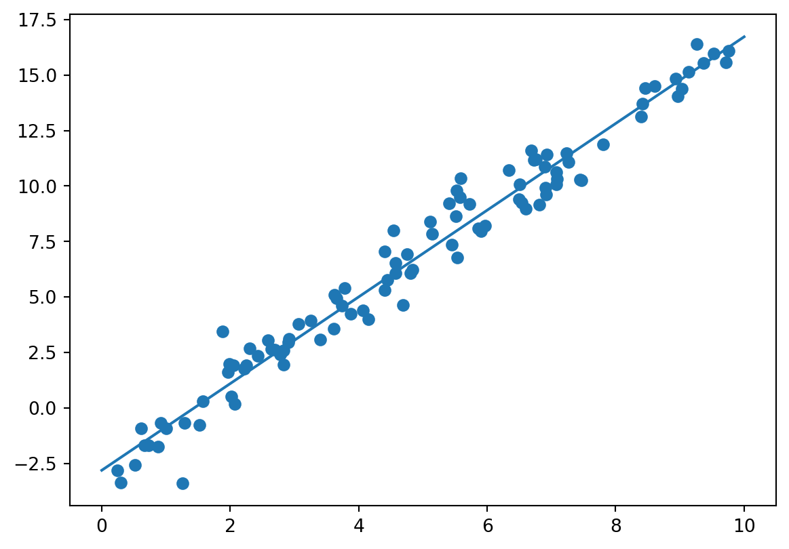

Regression is used in many fields, including finance, economics, biology, and engineering. The goal is to predict a continuous outcome on historical or observed data.
What is regresssion?
Regression is a type of supervised learning task where the goal is to predict a continuous variable based on the input features. In other words, regression models are designed to establish a relationship between the input features and the target variable.
Target Variable (Dependent Variable): a continuous numeric value that the model tries to estimate.
Input Features (Independent Variables): the model learns how these features relate to the target variable during the training process.
Types of Regression
Linear Regression
A linear regression model makes a prediction by simply computing a weighted sum of the input features, plus a constant called the bias term (also called the intercept term). The relationship is modeled as a straight line.
Code
import numpy as npfrom sklearn.preprocessing import add_dummy_featureimport matplotlib.pyplot as plt# create a graph of linear datanp.random.seed(42) m =100X =2* np.random.rand(m, 1) y =4+3* X + np.random.randn(m, 1) # add featuresX_b = add_dummy_feature(X) theta_best = np.linalg.inv(X_b.T @ X_b) @ X_b.T @ y# make predictionsX_new = np.array([[0], [2]])X_new_b = add_dummy_feature(X_new) y_predict = X_new_b @ theta_best# plot the dataplt.figure(figsize=(6, 4)) plt.plot(X_new, y_predict, "r-", label="Predictions")plt.plot(X, y, "b.")# format the figureplt.xlabel("$x_1$")plt.ylabel("$y$", rotation=0)plt.axis([0, 2, 0, 15])plt.grid()plt.legend(loc="upper left")plt.show()

Polynomial Regression
Allows for more complex relationships by introducing polynomial terms into the regression equation. This is particularly useful when the relationship between variables is nonlinear.
Code
from sklearn.preprocessing import PolynomialFeaturesfrom sklearn.linear_model import LinearRegression# create data pointsnp.random.seed(42)m =100X =6* np.random.rand(m, 1) -3y =0.5* X **2+ X +2+ np.random.randn(m, 1)# add featurespoly_features = PolynomialFeatures(degree=2, include_bias=False)X_poly = poly_features.fit_transform(X)# fit the modellin_reg = LinearRegression()lin_reg.fit(X_poly, y)# make predictionsX_new = np.linspace(-3, 3, 100).reshape(100, 1)X_new_poly = poly_features.transform(X_new)y_new = lin_reg.predict(X_new_poly)# plot and format the graphplt.figure(figsize=(6, 4))plt.plot(X, y, "b.")plt.plot(X_new, y_new, "r-", linewidth=2, label="Predictions")plt.xlabel("$x_1$")plt.ylabel("$y$", rotation=0)plt.legend(loc="upper left")plt.axis([-3, 3, 0, 10])plt.grid()plt.show()
Ridge Regression and Lasso Regression
Ridge and Lasso regression are variations of linear regression that include regularization terms to prevent overfitting. Ridge regression adds a penalty term to the squared magnitude of coefficients, while Lasso regression adds a penalty term to the absolute magnitude.
Elastic Net Regression
Elastic net regression is a middle ground between ridge regression and lasso regression. The regularization term is a weighted sum of both ridge and lasso’s regularization terms, and you can control the mix ratio r. When r = 0, elastic net is equivalent to ridge regression, and when r = 1, it is equivalent to lasso regression
Logistic Regression
Logistic regression is used to estimate the probability that an instance belongs to a particular class. If the estimated probability is greater than a given threshold, then the model predicts that the instance belongs to that class. This makes it a binary classifier. Similar to a linear regression model, a logistic regression model calculates the weighted sum of the input features, but instead of returning the result, it rturns the logistic of the result.
Softmax Regression
Softmax regression is a generalization of logistic regression to support multiple classes without having to train and combine multiple binary classifiers. The algorithm computes a score for each class, estimates the probability that an instance belongs to the class, and predicts the class with the highest probability.
Performance Metrics
Mean Squared Error (MSE): Measures the average squared difference between predicted and true values. This is used to assessing the accuracy of a model.
Mean Absolute Error (MAE): Measures the average absolute difference between predicted and true values. It is less sensitive to outliers than MSE.
R-squared (R²): Represents the proportion of the variance in the target variable that is predictable from the input features. Ranges from 0 to 1, where 1 indicates a perfect fit.
Gradient Descent
Gradient Descent is an optimization algorithm used to minimize a cost function by adjusting the weights of a model. The algorithm follows these steps:
Start with random values for the model parameters.
Calculate the gradient of the cost function. The gradient indicates the direction of the steepest increase
Adjust the model parameters in the opposite direction of the gradient to decrease the cost function.
Repeat steps 2 and 3 until the algorithm converges to a minimum
The algorith improves gradually, taking one step at a time. The size of the steps is determined by the learning rate. If the learning rate is too small, the algorithm will take a long time to converge. If the learning rate is too high, the algorithm will miss key patterns in the data.
Early Stopping
Polynomial regression algorithms use a technique called Early Stopping to prevent overfitting. As an algorithm learns, its prediction error (RMSE) goes down. After a while, though, the validation error starts to go back up. This indicates that the model has started to overfit the data. With early stopping, you stop training as soon as the validation error reaches the minimum.
Source Code
---title: "Linear and Nonlinear Regression"author: "Britney Aiken"date: "2023-12-04"image: "regression.jpg"code-fold: truecode-tools: truecode-block-bg: truecode-block-border-left: "#31BAE9"---### What is regresssion? Regression is a type of supervised learning task where the goal is to predict a continuous variable based on the input features. In other words, regression models are designed to establish a relationship between the input features and the target variable.**Target Variable (Dependent Variable):** a continuous numeric value that the model tries to estimate.**Input Features (Independent Variables):** the model learns how these features relate to the target variable during the training process.### Types of Regression#### Linear RegressionA linear regression model makes a prediction by calculating a weighted sum of the input features, plus a constant called the bias term. The relationship is modeled as a straight line.```{python}import numpy as npfrom sklearn.preprocessing import add_dummy_featureimport matplotlib.pyplot as plt# create a graph of linear datanp.random.seed(42) m =100X =2* np.random.rand(m, 1) y =4+3* X + np.random.randn(m, 1) # add featuresX_b = add_dummy_feature(X) theta_best = np.linalg.inv(X_b.T @ X_b) @ X_b.T @ y# make predictionsX_new = np.array([[0], [2]])X_new_b = add_dummy_feature(X_new) y_predict = X_new_b @ theta_best# plot the dataplt.figure(figsize=(6, 4)) plt.plot(X_new, y_predict, "r-", label="Predictions")plt.plot(X, y, "b.")# format the figureplt.xlabel("$x_1$")plt.ylabel("$y$", rotation=0)plt.axis([0, 2, 0, 15])plt.grid()plt.legend(loc="upper left")plt.show()```#### Polynomial RegressionPolynomial regression allows for more complex relationships by adding polynomial terms into the regression equation. ```{python}from sklearn.preprocessing import PolynomialFeaturesfrom sklearn.linear_model import LinearRegression# create data pointsnp.random.seed(42)m =100X =6* np.random.rand(m, 1) -3y =0.5* X **2+ X +2+ np.random.randn(m, 1)# add featurespoly_features = PolynomialFeatures(degree=2, include_bias=False)X_poly = poly_features.fit_transform(X)# fit the modellin_reg = LinearRegression()lin_reg.fit(X_poly, y)# make predictionsX_new = np.linspace(-3, 3, 100).reshape(100, 1)X_new_poly = poly_features.transform(X_new)y_new = lin_reg.predict(X_new_poly)# plot and format the graphplt.figure(figsize=(6, 4))plt.plot(X, y, "b.")plt.plot(X_new, y_new, "r-", linewidth=2, label="Predictions")plt.xlabel("$x_1$")plt.ylabel("$y$", rotation=0)plt.legend(loc="upper left")plt.axis([-3, 3, 0, 10])plt.grid()plt.show()```#### Ridge Regression and Lasso RegressionRidge and Lasso regression are variations of linear regression that include regularization terms to prevent overfitting. Ridge regression adds a penalty term to the squared magnitude of coefficients, while Lasso regression adds a penalty term to the absolute magnitude.#### Elastic Net RegressionElastic Net regression is a compromise between ridge regression and lasso regression. The regularization term is a weighted sum of both ridge and lasso’s regularization terms. You can control the mix ratio `r`. When `r = 0`, elastic net is equivalent to ridge regression, and when `r = 1`, it is equivalent to lasso regression.#### Logistic RegressionLogistic regression is used to estimate the probability that an instance belongs to a particular class. If the estimated probability is greater than a given threshold, then the model predicts that the instance belongs to that class. This makes it a binary classifier. Similar to a linear regression model, a logistic regression model calculates the weighted sum of the input features, but instead of returning the result, it rturns the logistic of the result.#### Softmax RegressionSoftmax regression is a generalization of logistic regression to support multiple classes without having to train and combine multiple binary classifiers. The algorithm computes a score for each class, estimates the probability that an instance belongs to the class, and predicts the class with the highest probability. ### Performance Metrics**Mean Squared Error (MSE):** Measures the average squared difference between predicted and true values. This is used to assessing the accuracy of a model.**Mean Absolute Error (MAE):** Measures the average absolute difference between predicted and true values. It is less sensitive to outliers than MSE.**R-squared (R²):** Represents the proportion of the variance in the target variable that is predictable from the input features. Ranges from 0 to 1, where 1 indicates a perfect fit.### Gradient DescentGradient Descent is an optimization algorithm used to minimize a cost function by adjusting the weights of a model. The algorithm follows these steps:1. Start with random values for the model parameters. 2. Calculate the gradient of the cost function. The gradient indicates the direction of the steepest increase3. Adjust the model parameters in the opposite direction of the gradient to decrease the cost function.4. Repeat steps 2 and 3 until the algorithm converges to a minimumThe algorith improves gradually, taking one step at a time. The size of the steps is determined by the learning rate. If the learning rate is too small, the algorithm will take a long time to converge. If the learning rate is too high, the algorithm will miss key patterns in the data. ### Early StoppingPolynomial regression algorithms use a technique called Early Stopping to prevent overfitting. As an algorithm learns, its prediction and validation errors goes down. But after a while, the validation error will start to go back up. This indicates that the model is starting to overfit the data. With early stopping, you stop training as soon as the validation error reaches the minimum.